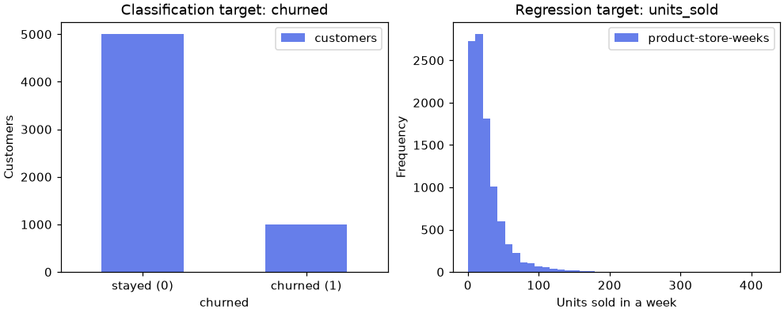

🧰 Lesson 0.1: Your ML Toolkit
Set up the workshop you will use for the whole course, learn the six steps every machine-learning project follows, and meet the data you will learn from.
🎯 Learning Objectives
By the end of this lesson, you will be able to:
- Create a project folder with a virtual environment, install the course packages, and confirm that scikit-learn and PyTorch import
- Choose between a notebook and a script for a task, and run code in both
- Describe the machine-learning workflow (frame, prepare, train, evaluate, explain, deploy) in your own words
- Tell supervised from unsupervised learning and classification from regression, and name the features and target of a table
- Load the seven Pinecrest data files and summarize each one's size, gaps and target
In This Lesson
🗺️ The Map: What You Are Setting Up
Machine learning is how a computer program gets better at a task by studying examples instead of following rules someone typed in. In this course you will teach programs to spot customers who are about to leave, forecast how many tents a store will sell, flag suspicious payments, read the mood of a product review, recommend the next purchase, and recognize clothing in photos. Every one of those projects starts in the same place: a working Python setup and a folder of data. Today you build both, once, and every later lesson starts from here.
💡 Mental Model: A Workshop of Your Own
Python is the building. A virtual environment is one workshop inside it with its own tool wall: the tools hung there are for this project only, so nothing you install disturbs any other project. The packages (pandas, scikit-learn, PyTorch and the rest) are the tools. A notebook is the workbench where you try things, and the data folder is the raw material. Machine learning adds one more idea to the workshop: a model, a tool you do not buy but make, by showing it examples.
🤔 Why This Matters
Machine-learning libraries are large and change quickly, and their results depend on their versions: the same code can print a slightly different number under a different release. A clean, pinned setup means the numbers on your screen match the numbers on these pages, so when something differs you know it is your code and not your tools. That makes every later lesson faster.
✅ Setup Trouble Is Normal
Something in this lesson may not work the first time. That is not a sign you are bad at this: it happens to professionals every time they set up a new machine. The Common Mistakes section lists the messages you are most likely to see, with the fix for each.
🏗️ A Project Folder and an Environment
This course needs Python 3.12 or newer. Open a terminal (Windows: PowerShell from the Start menu; macOS: Terminal; Linux: your terminal application) and check with py --version on Windows or python3 --version on macOS and Linux. If it is missing or older, install the current release from python.org (on Windows, tick "Add python.exe to PATH" on the first screen of the installer). The Python Data Science course's first lesson walks through this step by step if you need it.
1. Create the Folder
Everything you make in this course lives in one folder. The same two commands work in every terminal:
mkdir pinecrest-ml
cd pinecrest-ml2. Create and Activate the Environment
Python's built-in venv module creates the environment in a folder called .venv. Activating it tells this terminal window to use the environment's Python and packages.
Windows (PowerShell)
py -m venv .venv
.venv\Scripts\Activate.ps1macOS and Linux
python3 -m venv .venv
source .venv/bin/activateYour prompt now starts with (.venv). That prefix is how you know the environment is on. From here on, plain python means "the Python in this environment" on every system, and this course writes python.
⚠️ Activation Is Per Terminal Window
Close the terminal and the environment switches off (nothing is deleted). Each time you open a new terminal for this course, cd into pinecrest-ml and run the activate line again. Forgetting this is the most common cause of ModuleNotFoundError.
3. Start Your Learning Journal
Create an empty text file called journal.md in the folder (any editor will do; the project at the end of this lesson can also create it for you). Every lesson ends with five minutes of writing in it. Machine learning is full of ideas that feel clear while you read and slip away a week later; writing them in your own words is how they stay. Your folder will grow to look like this:
pinecrest-ml/
├── .venv/ the environment (never edit it by hand)
├── data/ the course data (next sections)
├── journal.md your learning journal
├── requirements.txt the package list
└── lesson_0_1.ipynb one notebook per lesson📦 Install the Course Packages
A requirements.txt file lists the packages a project needs. Download the course's file into pinecrest-ml:
Each line pins a package to the release the lessons were tested with. scikit-learn~=1.9.0 means "1.9.0 or any later 1.9.x": you get bug fixes but stay on the version whose output matches these pages. The main groups are core analysis (NumPy, pandas, Matplotlib), machine learning (scikit-learn, XGBoost, LightGBM, imbalanced-learn, Optuna), explaining models (SHAP, LIME), deep learning (PyTorch and torchvision), MLOps (MLflow, FastAPI) and JupyterLab.
Linux Only: Install the CPU Build of PyTorch First
Every lesson in this course runs on an ordinary laptop processor; no graphics card is needed. On Linux, the default PyTorch download bundles several gigabytes of GPU libraries you will not use. Install the much smaller CPU build first, and the main install will keep it:
python -m pip install torch~=2.14.0 torchvision~=0.29.0 --index-url https://download.pytorch.org/whl/cpuOn Windows and macOS, skip this step: the default download is already the right size.
Install Everything
With the environment active (look for (.venv)), install the whole list. It downloads several hundred megabytes and the finished environment takes about 2 GB of disk, so allow ten minutes or so.
python -m pip install -r requirements.txtA successful install ends with a line beginning Successfully installed and a long list of names: you asked for about two dozen packages, and each brings the packages it depends on.
💡 Why python -m pip and Not Just pip?
A computer can have several copies of pip, one per Python installation. python -m pip means "the pip that belongs to this Python", which, with the environment active, is exactly the one you want. It removes a whole category of "I installed it but Python cannot find it" problems. If you already use the faster uv tool, uv venv and uv pip install -r requirements.txt give the same result.
Check the Installation
Start Python by typing python, paste these lines, and press Enter (type exit() to leave afterward):
import sys
import numpy as np
import pandas as pd
import matplotlib
import sklearn
import torch
print("Python ", sys.version.split()[0])
print("NumPy ", np.__version__)
print("pandas ", pd.__version__)
print("Matplotlib ", matplotlib.__version__)
print("scikit-learn", sklearn.__version__)
print("PyTorch ", torch.__version__)
print("GPU available:", torch.cuda.is_available())Output (yours may vary slightly)
Python 3.12.14
NumPy 2.5.4
pandas 3.0.6
Matplotlib 3.11.2
scikit-learn 1.9.1
PyTorch 2.14.1+cpu
GPU available: FalseYour last digits may be higher, and on Windows or macOS PyTorch's version has no +cpu ending. GPU available: False is expected and fine: the course never needs one. If you do have an NVIDIA graphics card and see True, that is fine too; the lessons still run on the processor, so your results match the pages.
💡 Two Downloads Come Later
Module 9's picture maps and the deep-learning lessons in Module 10 use two public image collections (Fashion-MNIST and EuroSAT) and two pretrained networks. PyTorch downloads them the first time a lesson asks for them: roughly 175 MB of downloads that take about 330 MB of disk. Nothing to do now; just do not be surprised when Lesson 9.3, the first lesson that uses Fashion-MNIST, pauses to download (optional exercises in Lessons 9.1 and 9.2 may fetch it sooner).
📓 Notebooks and Scripts
You will run Python two ways in this course, and machine-learning work uses both.
Notebook (.ipynb) | Script (.py) | |
|---|---|---|
| How it runs | One cell at a time; results appear under each cell | Top to bottom, all at once: python train.py |
| Memory | Variables stay alive between cells until you restart | Starts fresh on every run |
| Best for | Exploring data, trying models, charts next to the code | A finished training run that must repeat exactly, or a model served to other programs |
| Watch out for | Running cells out of order and fooling yourself | Reloading the data on every run while you experiment |
The out-of-order trap matters more in machine learning than anywhere else. If you change how the data is split, then rerun only the training cell, the model is trained on the old split and evaluated on the new one, and the score is meaningless. When in doubt, use Restart Kernel and Run All Cells.
Option A: JupyterLab
Start it from your project folder with the environment active. Your browser opens on the folder; click Python 3 (ipykernel) under "Notebook" to create a notebook, then press Shift+Enter to run a cell. Press Ctrl+C in the terminal to stop JupyterLab.
jupyter labOption B: Visual Studio Code
Install the Python and Jupyter extensions, open the pinecrest-ml folder (File → Open Folder), and when you create a notebook click Select Kernel and choose the entry that mentions .venv. For scripts, pick the same interpreter with Python: Select Interpreter.
⚠️ The Kernel Must Be Your Environment
A notebook runs on a "kernel", which is simply a Python process. If the kernel is some other Python on your computer, import sklearn fails even though you installed it. Starting jupyter lab from the activated environment, or choosing the .venv kernel in VS Code, guarantees they match.
A First Script
Scripts are worth trying now, because the MLOps lessons turn finished work into scripts. Create a file called check_setup.py in your folder with this content:
from pathlib import Path
import sklearn
import torch
print(f"scikit-learn {sklearn.__version__}, PyTorch {torch.__version__.split('+')[0]}")
print("data folder found:", Path("data").is_dir())Then run it from the terminal:
python check_setup.pyOutput
scikit-learn 1.9.1, PyTorch 2.14.1
data folder found: TrueIf the second line says False, that is fine for the moment: the data comes in the next section. Run the script again afterward and it should say True.
How Code Appears in These Lessons
- Blocks build on each other. Within a lesson, each code block assumes you ran the ones before it, exactly like cells in a notebook. Work in one notebook per lesson, top to bottom. Projects start fresh from
pd.read_csv, so they also work as scripts. - Every output box is real. The output under each block was produced by running that exact code with the course packages. Your output should match.
- Lessons use
print(). A notebook shows only the value of a cell's last line, and a script shows nothing unless you print. Printing works the same in both. - Seeds make randomness repeatable. Many machine-learning steps shuffle or sample at random. The lessons fix the starting point of that randomness (
random_state=42), so your split, your model and your numbers match the page.
🏔️ The Pinecrest ML Data
Every lesson in this course uses data from one company: Pinecrest Outfitters, an outdoor-gear retailer with an online shop and four stores in Boise, Bend, Flagstaff and Asheville. Pinecrest is fictional, and so is every customer, product and number in its files. The tables were built for machine learning: each one holds a problem worth solving and real patterns to find, plus a few traps to catch.
⬇️ Download pinecrest-ml-data.zip (1.4 MB)
Save the zip file into pinecrest-ml and unzip it there. Python can do that on any system; the . at the end means "extract here":
python -m zipfile -e pinecrest-ml-data.zip .You now have a data folder holding seven CSV files, a README.md that describes every column, and make_ml_data.py, the program that generated the data. Start a notebook called lesson_0_1 in your project folder and check that Python can see the files:
from pathlib import Path
for f in sorted(Path("data").glob("*.csv")):
print(f"{f.name:<24}{f.stat().st_size / 1024:>7,.0f} KB")Output
customers_churn.csv 608 KB
daily_store_sales.csv 144 KB
interactions.csv 986 KB
products_ml.csv 19 KB
reviews.csv 675 KB
transactions.csv 3,143 KB
weekly_demand.csv 966 KB💡 Relative Paths
"data/customers_churn.csv" is a relative path: "the data folder inside wherever Python is currently working". That is why you start JupyterLab, or run scripts, from inside pinecrest-ml. Forward slashes work on Windows too, so the same line runs everywhere.
👀 A First Look at the Customers
The file you will use most is customers_churn.csv: one row per customer, as of June 30, 2025. Load it with pandas and look at its size and a few columns.
import pandas as pd
pd.set_option("display.width", 150)
pd.set_option("display.max_columns", 20)
customers = pd.read_csv("data/customers_churn.csv")
print(customers.shape)
print(customers[["customer_id", "home_store", "tenure_months", "orders_12m", "spend_12m", "churned"]].head())Output
(6000, 20)
customer_id home_store tenure_months orders_12m spend_12m churned
0 C100001 Bend 31 11 1604.53 0
1 C100002 Boise 41 12 898.80 0
2 C100003 Flagstaff 4 2 596.37 0
3 C100004 Online 5 5 266.99 0
4 C100005 Boise 65 11 995.99 06,000 customers and 20 columns. Each row describes one customer's previous 12 months: how long they have been a member, how often they ordered, how much they spent, how many support tickets they opened. The last column, churned, records what happened afterward: 1 means the customer made no purchase in the following six months. Next, count the column types and list the columns that have gaps:
print(customers.dtypes.value_counts())
print()
print(customers.isna().sum()[lambda s: s > 0])Output
str 8
int64 7
float64 5
Name: count, dtype: int64
age_group 487
email_opens_90d 537
cancellation_reason 5375
dtype: int64Three kinds of column (whole numbers, decimals and text) and three columns with gaps. pandas 3 reads text as the str type; dates such as signup_date stay text until you ask for them with parse_dates. Two of the gaps are ordinary missing data (an optional profile field, email tracking that was blocked). The third, cancellation_reason, is a deliberate trap that Lesson 1.2 is built around. The data/README.md file warns you about it too: read the README for each file before you model it, exactly as you would at a real job.
The Other Six Files
A quick loop shows the size of every table:
files = ["customers_churn", "weekly_demand", "transactions", "reviews",
"products_ml", "interactions", "daily_store_sales"]
for name in files:
df = pd.read_csv(f"data/{name}.csv")
print(f"{name:18s} {df.shape[0]:>6,} rows {df.shape[1]:>2} columns")Output
customers_churn 6,000 rows 20 columns
weekly_demand 9,984 rows 15 columns
transactions 50,000 rows 13 columns
reviews 4,000 rows 8 columns
products_ml 200 rows 8 columns
interactions 32,178 rows 5 columns
daily_store_sales 4,384 rows 6 columns| File | One row is | Main use in the course |
|---|---|---|
customers_churn | a customer at the June 2025 snapshot | predicting churn (Modules 1 to 7), customer segments (Module 8) |
weekly_demand | one product in one store in one week | predicting units sold (Modules 1 to 5) |
transactions | one online card payment | rare-event detection: fraud (Lessons 2.5 and 8.6) |
reviews | one product review | reading text: sentiment (Lessons 4.2 and 11.1) |
products_ml, interactions | a product; one customer's history with one product | recommendations (Lesson 11.2) |
daily_store_sales | one store on one day, 2023 to 2025 | forecasting and sequences (Lessons 1.2 and 10.4) |
🔄 The Machine-Learning Workflow
Every project in this course, from a five-minute exercise to the capstone, follows the same six steps. Learn them now and you will always know where you are.
| Step | The question it answers | Pinecrest example | Where you learn it |
|---|---|---|---|
| Frame | What exactly do we predict, for whom, and what is a mistake worth? | "Which active customers will not buy in the next six months? A wasted coupon costs little; a lost customer costs a lot." | Lesson 1.1, every project |
| Prepare | Which columns may the model use, and how do we turn them into numbers? | Fill missing email counts, turn store names into numbers, drop columns recorded after the fact | Module 2 |
| Train | Which model learns the pattern? | Logistic regression, a random forest, gradient boosting | Modules 1, 3 to 5, 10 |
| Evaluate | How good is it on data it has never seen, compared with doing nothing clever? | Test customers held back; a baseline that predicts "nobody churns" | Module 1, Module 6 |
| Explain | Why does it predict what it predicts, and is it fair? | Which signals push a customer's risk up | Module 7 |
| Deploy | How do others use it, and how do we notice when it stops working? | A web service that scores customers each month | Module 12 |
💡 The Loop Is the Point
The arrow from Evaluate back to Prepare is where most of the real work happens. Beginners expect machine learning to be about choosing a clever algorithm; in practice most improvement comes from better framing, better data and more honest evaluation. Notice too that Evaluate comes before Explain and Deploy: a model you have not tested honestly is not worth explaining.
Deliberately, this lesson trains no models. The data first look you just did belongs to steps 1 and 2. Lesson 1.1 is where you train your first one.
🔑 Features, Targets and Kinds of Problems
A handful of words carry the whole course. Each is easiest to learn on a real table.
🔑 Key Terms
Sample (or row): one example, such as one customer. Feature: a column the model may use as input, such as orders_12m. Target (or label): the column you want to predict, such as churned. Model: the program that learns to go from features to target. Training (or fitting): the step where it learns from examples.
Supervised and Unsupervised
When every training example comes with the right answer (each past customer's row says whether they churned) the learning is supervised: the answers supervise the model. Most of this course is supervised. When there is no answer column, and you ask the computer to find structure on its own (groups of customers who shop alike, or payments that look unlike all the others), the learning is unsupervised. Module 8 is about that.
Classification and Regression
Supervised problems come in two kinds, and the kind decides which models and which scores you use. The target column tells you which you have:
demand = pd.read_csv("data/weekly_demand.csv")
print(customers["churned"].value_counts())
print()
print(demand["units_sold"].describe().round(1))Output
churned
0 5008
1 992
Name: count, dtype: int64
count 9984.0
mean 25.3
std 25.2
min 0.0
25% 10.0
50% 18.0
75% 32.0
max 420.0
Name: units_sold, dtype: float64churned takes one of two values: predicting it is classification (choosing a category). units_sold is a quantity anywhere from 0 to 420: predicting it is regression (predicting a number). A picture makes the difference obvious:
import matplotlib.pyplot as plt
fig, (ax1, ax2) = plt.subplots(1, 2, figsize=(9, 3.6), layout="constrained")
customers["churned"].value_counts().sort_index().plot.bar(
ax=ax1, color="#667eea", rot=0, label="customers")
ax1.set_xticks([0, 1], ["stayed (0)", "churned (1)"])
ax1.set_title("Classification target: churned")
ax1.set_ylabel("Customers")
ax1.legend()
demand["units_sold"].plot.hist(ax=ax2, bins=40, color="#667eea", label="product-store-weeks")
ax2.set_title("Regression target: units_sold")
ax2.set_xlabel("Units sold in a week")
ax2.legend()
plt.show()
Two details in these charts will matter soon. Only one customer in six churned, so the classes are imbalanced, and a model that always says "stays" would already be right about 83% of the time (Lesson 1.1 measures exactly that). And weekly sales are skewed: most weeks sell a few units and a few weeks sell hundreds, which affects how you judge a regression model.
| Problem | Kind | Target |
|---|---|---|
| Will this customer leave? | supervised, classification | churned (0 or 1) |
| How many tents will Bend sell next week? | supervised, regression | units_sold |
| Is this payment fraud? | supervised, classification (a very rare class) | is_fraud |
| Is this review positive? | supervised, classification on text | from rating |
| Which customers shop alike? | unsupervised (clustering) | none |
| What should this customer buy next? | recommendation (learns from past purchases) | from interactions |
⚠️ A Number Is Not Always a Quantity
A column of numbers can still be a category. churned holds 0 and 1, but they are labels, not amounts: "1.5 churned" means nothing. Star ratings sit in between, and the review lessons treat them as categories. Ask "would a value halfway between two others make sense?" If not, you are classifying.
⚠️ Common Mistakes
These are the messages nearly everyone meets in the first week. Each one is feedback, not a verdict: it tells you exactly which assumption to check.
1. Importing the Package by Its Install Name
import scikit_learnError
ModuleNotFoundError: No module named 'scikit_learn'What it means: you install the package as scikit-learn but import it as sklearn; the two names differ. Fix: import sklearn, or from sklearn.linear_model import LogisticRegression. If the message names the correct module (No module named 'sklearn' or 'torch'), the running Python cannot see your environment: look for (.venv) in your prompt, or pick the .venv kernel in your notebook.
2. Python Is Working in a Different Folder
pd.read_csv("customers_churn.csv")Error
FileNotFoundError: [Errno 2] No such file or directory: 'customers_churn.csv'What it means: the path is incomplete (it should be "data/customers_churn.csv") or Python is running from another folder. Fix: print(Path.cwd()) shows where Python is working; start JupyterLab or your script from inside pinecrest-ml.
3. A Column Name That Is Almost Right
customers["churn"]Error
KeyError: 'churn'What it means: there is no column with exactly that name; it is churned. Fix: print(customers.columns.tolist()) and copy the name from there.
4. Treating a Date That Is Still Text as a Date
customers["signup_date"].dt.yearError
AttributeError: Can only use .dt accessor with datetimelike valuesWhat it means: read_csv leaves dates as text unless you ask, so the date tools under .dt do not exist yet. Fix: pd.read_csv("data/customers_churn.csv", parse_dates=["signup_date"]), or convert one column with pd.to_datetime.
5. A Multi-Gigabyte PyTorch Download (Linux)
If pip install -r requirements.txt on Linux starts downloading files with nvidia or cuda in their names, totaling several gigabytes, pip is installing the GPU build of PyTorch. It works, but it wastes time and disk. Fix: press Ctrl+C, run the CPU-build line from Install the Course Packages first, then the requirements line again. On Windows, if .venv\Scripts\Activate.ps1 says "running scripts is disabled on this system", run Set-ExecutionPolicy -Scope CurrentUser RemoteSigned once, answer Y, and activate again.
🛠️ Project: A Data Card for the Course Files
Before a data scientist trains anything, they write down what they have: how big each table is, where it has gaps, and what it would predict. That short summary is often called a data card. You will build one for all seven Pinecrest files and keep it as data_overview.csv for the rest of the course. Work in a fresh notebook called lesson_0_1_project or a script called data_card.py. Allow about 30 minutes.
🛠️ Step 1: Load every file into a dictionary (5 min)
A dictionary keyed by file name keeps seven tables tidy and lets every later step loop over them.
import pandas as pd
names = ["customers_churn", "weekly_demand", "transactions", "reviews",
"products_ml", "interactions", "daily_store_sales"]
tables = {name: pd.read_csv(f"data/{name}.csv") for name in names}
print(len(tables), "tables loaded")
print(f"{sum(len(df) for df in tables.values()):,} rows in total")Output
7 tables loaded
106,746 rows in total🛠️ Step 2: Find the gaps (5 min)
For each table, list the columns that have missing values and how many.
for name, df in tables.items():
gaps = df.isna().sum()
gaps = gaps[gaps > 0]
listed = ", ".join(f"{col} {n:,}" for col, n in gaps.items())
print(f"{name:18s} {listed or 'no missing values'}")Output
customers_churn age_group 487, email_opens_90d 537, cancellation_reason 5,375
weekly_demand no missing values
transactions no missing values
reviews no missing values
products_ml no missing values
interactions rating 19,970
daily_store_sales event 4,144Three tables have gaps, and each gap means something different. In customers_churn they are ordinary missing data plus the trap column. In daily_store_sales an empty event simply means an ordinary day. In interactions, most rows have no star rating because most buyers never leave one: a gap that carries meaning, which the recommendation lesson uses. "Missing" is never just a count; always ask why a value is missing.
🛠️ Step 3: Name each target and its kind (10 min)
This step is framing, the first step of the workflow, and it is your judgment, not the computer's. Write down which column each table would predict and what kind of problem that is, then let pandas show how many distinct values each target has, as a check.
targets = {
"customers_churn": ("churned", "classification"),
"weekly_demand": ("units_sold", "regression"),
"transactions": ("is_fraud", "classification"),
"reviews": ("rating", "classification"),
"products_ml": (None, "none (a lookup table)"),
"interactions": ("purchases", "recommendation"),
"daily_store_sales": ("sales", "regression (forecasting)"),
}
for name, (target, kind) in targets.items():
distinct = tables[name][target].nunique() if target else "-"
print(f"{name:18s} {str(target):11s} {str(distinct):>5} {kind}")Output
customers_churn churned 2 classification
weekly_demand units_sold 179 regression
transactions is_fraud 2 classification
reviews rating 5 classification
products_ml None - none (a lookup table)
interactions purchases 7 recommendation
daily_store_sales sales 4350 regression (forecasting)The distinct counts back up the framing: 2 values for the yes-or-no targets, 5 for star ratings, and hundreds or thousands for the quantities.
🛠️ Step 4: Check how rare the rare class is (5 min)
For the two yes-or-no targets, the share of 1s decides how hard the problem is and how easily a score can fool you. The mean of a 0/1 column is exactly that share.
for name, target in [("customers_churn", "churned"), ("transactions", "is_fraud")]:
rate = tables[name][target].mean()
print(f"{target:8s} {rate:.2%} of rows are 1; always guessing 0 is right {1 - rate:.2%} of the time")Output
churned 16.53% of rows are 1; always guessing 0 is right 83.47% of the time
is_fraud 0.88% of rows are 1; always guessing 0 is right 99.12% of the timeA fraud "detector" that never flags anything would be right 99.12% of the time and catch nobody. Keep that number in mind whenever someone quotes you an accuracy.
🛠️ Step 5: Save the data card (5 min)
Collect one row per table and save it.
card = pd.DataFrame([
{"file": name,
"rows": len(df),
"columns": df.shape[1],
"missing_cells": int(df.isna().sum().sum()),
"target": targets[name][0] or "",
"problem": targets[name][1]}
for name, df in tables.items()
])
card.to_csv("data_overview.csv", index=False)
print(card.to_string(index=False))Output
file rows columns missing_cells target problem
customers_churn 6000 20 6399 churned classification
weekly_demand 9984 15 0 units_sold regression
transactions 50000 13 0 is_fraud classification
reviews 4000 8 0 rating classification
products_ml 200 8 0 none (a lookup table)
interactions 32178 5 19970 purchases recommendation
daily_store_sales 4384 6 4144 sales regression (forecasting)🛠️ Step 6: Start your learning journal (5 min)
If you have not created journal.md yet, let Python do it. The check means rerunning the cell never wipes what you have written.
from pathlib import Path
journal = Path("journal.md")
if not journal.exists():
journal.write_text("# My Python Machine Learning journal\n\n## Lesson 0.1: Your ML Toolkit\n\n", encoding="utf-8")
print("created journal.md")
else:
print("journal.md already exists; nothing changed")Output
created journal.mdOpen it in your editor and write the first entry at the end of this lesson.
✅ Project Completion Checklist
- All seven tables load from
data/with relative paths (106,746 rows in total) - You know which three tables have missing values, in which columns, and why
- Each table has a target (or none) and a problem kind that you chose and can justify
- You can quote the churn rate (16.53%) and the fraud rate (0.88%)
data_overview.csvholds one row per tablejournal.mdexists in your project folder
🏋️ Hands-on Exercises
These continue in the project notebook, so tables already exists. They use only pandas: no models yet.
🏋️ Exercise 1: Where Do Customers Shop?
Count the customers in customers_churn by home_store, then compute the churn rate for each store with groupby. Which store has the most customers? Do the rates differ much?
💡 Hint
value_counts() counts; groupby("home_store")["churned"].mean() gives the share of 1s per store.
✅ Solution
customers = tables["customers_churn"]
print(customers["home_store"].value_counts())
print()
print(customers.groupby("home_store")["churned"].mean().round(3).sort_values())Output
home_store
Online 2664
Boise 1010
Bend 791
Asheville 791
Flagstaff 744
Name: count, dtype: int64
home_store
Bend 0.150
Online 0.159
Boise 0.167
Asheville 0.178
Flagstaff 0.187
Name: churned, dtype: float64The online shop has by far the most customers. The churn rates differ by store, but by only a few points: on its own, the home store is a weak signal. Lesson 2.1 shows how to feed a text column like this to a model.
🏋️ Exercise 2: Snow Gear Is Seasonal
In weekly_demand, parse week_start as a date, then compute the average units sold per week for the Snow category in each calendar month. What does that tell you about a model that ignores the season?
💡 Hint
pd.to_datetime(df["week_start"]) converts the column; .dt.month gives the month number to group by.
✅ Solution
demand = tables["weekly_demand"].copy()
demand["week_start"] = pd.to_datetime(demand["week_start"])
snow = demand[demand["category"] == "Snow"]
print(snow.groupby(snow["week_start"].dt.month.rename("month"))["units_sold"].mean().round(1))Output
month
1 32.6
2 24.3
3 8.9
4 2.7
5 1.0
6 0.5
7 0.3
8 0.5
9 3.1
10 10.1
11 27.2
12 41.5
Name: units_sold, dtype: float64Snow gear sells dozens of units a week in winter and almost nothing in summer. A model that does not know the month (or the temperature) cannot tell those weeks apart, so the season is a feature you will want.
🏋️ Exercise 3: Payments Through the Day
In transactions, compute the fraud rate for night payments (hour from 0 to 5) and for all other hours. How many times more likely is a night payment to be fraud?
💡 Hint
Make a True/False column with tx["hour"] < 6 and group by it.
✅ Solution
tx = tables["transactions"]
night_rate = tx.groupby(tx["hour"] < 6)["is_fraud"].mean()
print(night_rate.round(4))
print(f"night payments are {night_rate[True] / night_rate[False]:.1f} times as likely to be fraud")Output
hour
False 0.0066
True 0.0662
Name: is_fraud, dtype: float64
night payments are 10.1 times as likely to be fraudNight payments are much riskier, yet even at night the vast majority are legitimate. That is the shape of most fraud problems: real signals, but no single one that settles the question. Combining many weak signals is exactly what models are good at.
🏋️ Exercise 4: How Empty Is the Purchase Matrix? (Stretch)
A recommender pictures interactions as a grid with one row per customer and one column per product. Count the distinct customers and products, then work out what share of the grid's cells hold a purchase. What does the answer mean for a recommender?
💡 Hint
Each row of interactions is one filled cell. Divide the number of rows by customers times products.
✅ Solution
inter = tables["interactions"]
n_customers = inter["customer_id"].nunique()
n_products = inter["product_id"].nunique()
density = len(inter) / (n_customers * n_products)
print(f"{n_customers:,} customers x {n_products} products = {n_customers * n_products:,} cells")
print(f"{len(inter):,} filled: {density:.1%} of the grid")Output
3,000 customers x 200 products = 600,000 cells
32,178 filled: 5.4% of the gridAbout 95% of the grid is empty: each customer has bought only a few of the 200 products. A recommender's job is to guess which empty cells would be filled, and Lesson 11.2 shows how it borrows information from similar customers to do that.
🎯 Quick Quiz
🎯 Check Your Understanding
Question 1: Pinecrest wants to predict how many sleeping bags each store will sell next week. What kind of problem is this?
Question 2: The marketing team asks you to find groups of customers who shop in similar ways. No column says which group anyone belongs to. What kind of learning is this?
Question 3: What does this print?
quiz_flags = pd.Series([0, 1, 0, 0, 1, 0, 0, 0])
print(quiz_flags.mean())Question 4: Yesterday everything worked. Today, in a new terminal window, python check_setup.py fails with ModuleNotFoundError: No module named 'sklearn'. What is the most likely fix?
Question 5: In the six-step workflow, where do you compare your model with a baseline, using data the model never saw during training?
❓ Common Questions at This Stage
Do I need a graphics card (GPU) for this course?
No. Every lesson, including the deep-learning ones, is sized to run on an ordinary laptop processor in a few minutes: the deep-learning lessons use small models and subsets of the data, and say how to scale up if you have a GPU. Most machine learning on tables, which is most of this course and most of the job market, never needs one.
How much math do I need?
Arithmetic, averages, and comfort reading a formula with a sum in it. The lessons explain each idea with a picture and words first and show at most one formula when it genuinely helps. You will use models long before you could derive them, which is how most practitioners work.
Is Pinecrest's data real?
No. Every customer, product and payment is invented, and data/make_ml_data.py regenerates the files exactly. The data was designed to behave like real retail data, with seasons, imbalanced classes, missing values, a leak and some noise, so the skills transfer directly. The image lessons use two real public datasets.
Why not use Google Colab instead of installing anything?
You can: upload the data folder and the code runs. But Colab's package versions change without notice, so some outputs will not match the pages, and every session starts from scratch. A local environment you control is a skill in its own right and the way you will work on real projects.
🌟 Going Further: Bonus Challenge
Read data/README.md from top to bottom. For each of the seven files, write one sentence in your journal answering: "If I trained a model on this file, what could go wrong?" Look for columns that are recorded after the event you want to predict, rows that are related to each other (the same product every week), and classes that are very rare. You will check your answers against Lesson 1.2.
📓 Learning Journal
Take five minutes to write in your learning journal (the journal.md file you started in this lesson, or a paper notebook). Jot down:
- Key concepts you learned today
- Techniques that clicked (and the ones that have not, yet)
- Questions or confusion to come back to
- Ideas to try on your own
- Progress and feelings: how did this lesson go for you?
✍️ This lesson's prompt: Pick one problem from your own work or life that a model might help with. Frame it as the workflow's first step would: what exactly is predicted, what would the features and the target be, is it classification or regression, and what does a wrong prediction cost?
📝 Lesson Summary
🎓 Key Takeaways
- One project folder, one virtual environment, pinned packages: your numbers match the pages
- Activate the environment in every new terminal;
python -m pipinstalls into the Python you are using - Notebooks are for exploring, scripts for runs that must repeat; restart and run all when in doubt
- The workflow is frame, prepare, train, evaluate, explain, deploy, with a loop from evaluate back to prepare
- Supervised learning learns from an answer column; unsupervised learning finds structure without one
- A category target means classification; a quantity target means regression
- Rare classes make accuracy easy to fake: never guessing fraud is "99.12% accurate"
🏆 What You've Accomplished
- You built a working machine-learning environment with scikit-learn and PyTorch
- You ran code as a notebook and as a script
- You loaded all seven Pinecrest tables and know what each row means
- You framed six prediction problems and wrote a data card for the course
- You started a learning journal
🔭 Looking Ahead
In Lesson 1.1: The scikit-learn Estimator API you will train your first models: a baseline that knows nothing, a logistic regression and a random forest, all on the customer table you met today, and use them to build a shortlist of customers most likely to leave.
📋 Before the Next Lesson
- Run
python check_setup.pyonce more and confirm both lines look right. - Skim the
customers_churn.csvsection ofdata/README.md, including the warning aboutcancellation_reason. - Write your first journal entry.
🌱 Encouragement for the Journey
The least glamorous lesson in the course is behind you, and it is the one that stops the most people. You now have the same setup a working data scientist uses, a company's worth of data to learn from, and a map of where every lesson fits. From here, every lesson ends with something that works. Welcome to machine learning.